Activity: Assembly drawing creation
This activity demonstrates the method for creating a drawing of an exploded assembly view.
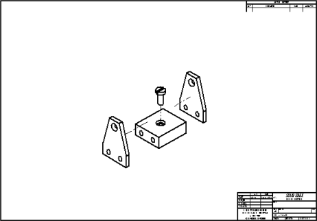
After completing this activity, you will be able to:
-
Place drawing views of an assembly.
-
Create a drawing view that uses an exploded view assembly display configuration.
Create a new ISO draft document.
-
Choose the File menu → New → ISO Metric Draft.
Use the Drawing View Creation Wizard to choose an assembly model, select a display configuration, and place an isometric view of the model on the drawing sheet.
Choose the View Wizard command.
In the Select Model dialog box, do the following:
-
Set the Files of type: field to Assembly Document (*.asm).
-
Select carrier.asm from the folder where you saved the activity files.
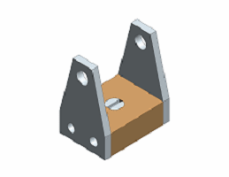
-
From the Configuration list, choose exploded view.
The Configuration list is not available when opening part and sheet metal models.
-
Click Open.
From the View Wizard command bar, choose a view scale of 1:2.
Place the drawing view in the center of the drawing sheet.
Right-click the Sheet1 tab, choose Sheet Setup, and then set the background sheet to A1–sheet.
Click Save and save the file as mycarrier.dft in the activities folder.
Insert a new sheet with an A1-Sheet for the Background sheet.

Choose the View Wizard command .
In the Select Attachment dialog box, ensure that the Create drawing view independent of assembly check box is unchecked and click OK.
On the View Wizard command bar, click the Drawing View Layout option  .
.
In the Drawing View Creation Wizard (Drawing View Layout) dialog box, click the Custom button.
A live preview of the model in its current orientation is displayed in the Custom Orientation window.
Do the following:
-
Use the Named Views list or the View Orientation button
 to change to an ISO View orientation of the model.
to change to an ISO View orientation of the model. -
Click the Shaded with VHL Overlay button.
-
Click the Common Views button.
-
In the Common Views dialog box, click Show face view, as shown below.
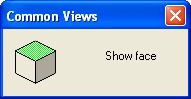
-
Click Rotate 90° clockwise, as shown below.
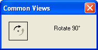
-
Close the Common Views dialog box by clicking the X in the upper-right corner.
The image below shows the resulting view.
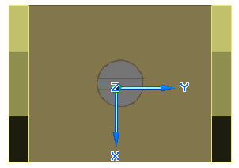
Click Close in the Custom Orientation window, and then in the Drawing View Creation Wizard (Drawing View Layout) dialog box, click OK.
On the View Wizard command bar, change the scale to 1:1.
Place the view in the upper-left region of the drawing sheet. Right-click to end drawing view placement mode.
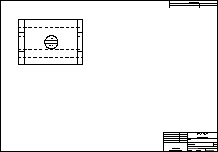
Draw a cutting plane on the front view that will be used to create a section view.
Choose the Cutting Plane command  .
.
Click the drawing view just placed and construct a cutting line through the center of the view. To locate the center of the circle, use the Zoom Area command to zoom in close on the view.
When you are finished drawing the line, the cutting plane should look similar to the illustration below.
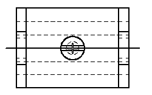
Choose the Close Cutting Plane command
.
Move the cursor and click on the upper side of the cutting plane to define the cutting direction.
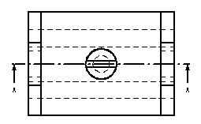
Create a section view using the cutting plane defined in the previous step.
Choose the Section command.
Click the cutting line just constructed.
Click the Model Display Settings option .
On the Drawing View Properties dialog box, expand the parts list for the assembly by clicking the + symbol next to carrier.asm. This shows all of the parts in the assembly. If the assembly contained subassemblies, these would also display.
Click the Part named mtgpin.par:1, and then uncheck the Show check box. This excludes the part from the sectioning process.
Click OK and finish placing the section view below the top view. Your drawing sheet should look similar to the following illustration. Notice that the mounting pin (mtgpin.par) is hidden in the section view.
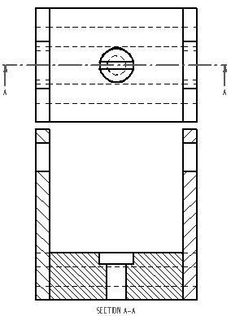
Hide another part in the drawing view. Once this is done, an out-of-date border appears.
Click the Select command and select the new section view. Right-click the view and choose Properties from the shortcut menu. In the High Quality View Properties dialog box, on the Display tab, repeat the previous steps to hide splate.par:1 and click OK.
The section view should now display an out-of-date border.
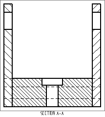
Click the Update Views command . The part file named splate.par:1 is now hidden in the section view of the assembly and the out-of-date border is no longer displayed.
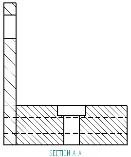
Adjust the displayed parts again. This demonstrates how to turn on and off the display of parts in the drawing view.
Click the Select command and select the section view again. Display the High Quality View Properties dialog box again. On the Display page, expand the parts list for carrier.asm, show all parts except mtgpin.par, and click OK.
Choose Update Views to update the section view. Splate.par:1 now displays in the section view.
This completes the activity. Save and close the file.
In this activity you learned how to creating a drawing of an exploded assembly view. You also learned how to control the display of assembly parts on the drawing.
-
Click the Close button in the upper-right corner of the activity window.